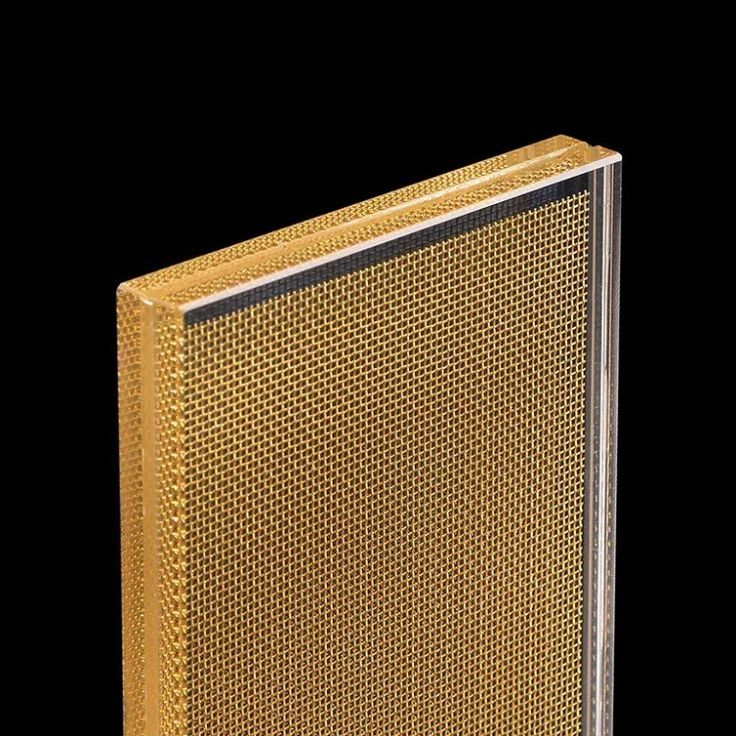
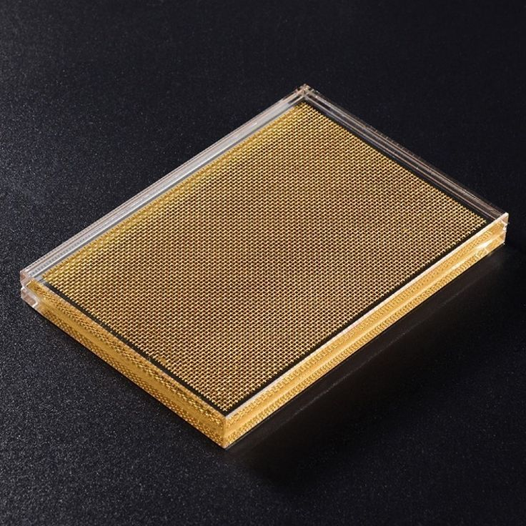

039 At Inserciones
At
Tejida
Categoria
Inserciones / Laminado
Insercion
Malla metalica tejida (woven)
Espesor
8mm — 16mm
Dimensiones max
3210 x 2400 mm
Acabado mostrado
Oro / bronce
Patron
Malla tejida
Tejido de hilo metalico entrelazado (over-under), no malla soldada
Serie
Serie A — Tejida
Familia de mallas finas laminadas entre laminas de vidrio
Acabado
Oro / bronce
Tono dorado ambar con reflejos bronce bajo luz natural
Espesor disponible
8 / 10 / 12 / 16 mm
Laminado en configuracion 4+4 hasta 8+8 con malla intermedia
Dimensiones
3.21 x 2.4 m
Corte a medida disponible sin cargo adicional
Aplicaciones
Fachada / Mobiliario / Interior
Lobbys de hotel, mesas de diseno, particiones decorativas, fachadas premium

DETALLE MACRO — MALLA TEJIDA ENTRE LAMINAS — LUZ RASANTE
INSTALACION — LOBBY HOTEL — PARTICION TEJIDA ORO
CONTEXTO — MESA DE DISENO — TEJIDA COMO SUPERFICIE
Quieres ver este vidrio en persona?
Solicita una muestra fisica o descarga la ficha tecnica completa.